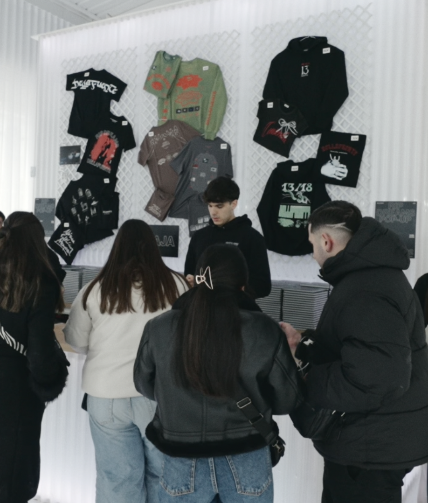

STAFF
El staff necesitaba una visión global del negocio y herramientas capaces de absorber una operativa compleja a medida que crecía el roster.
Cada acuerdo podía aplicar porcentajes distintos según artista y producto.
La facturación mensual era compleja y difícil de escalar.
Obtener informes o Certificar discos implicaba demasiado trabajo manual.
La subida de productos desde Shopify era tediosa por la casuística de perfiles de envío y formas de venta.